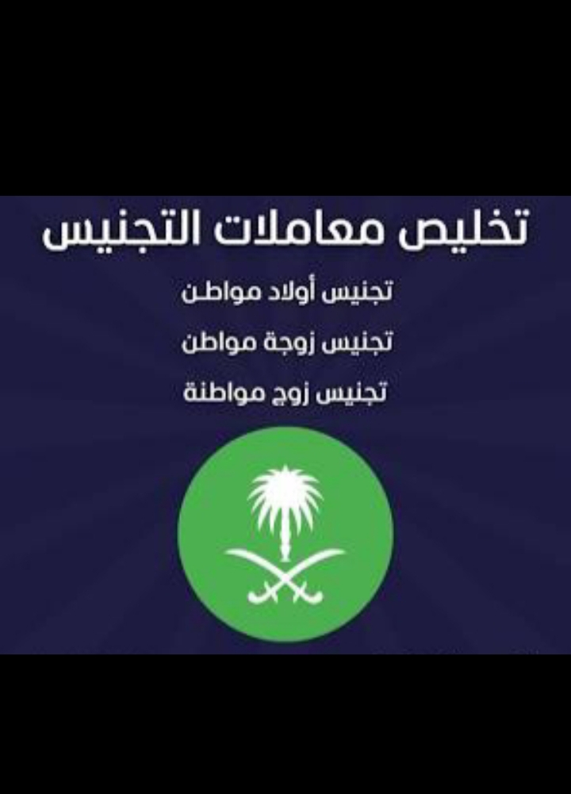

خدمات مكتب التعقيب لاستخراج التصاريح وتوثيق العقود
استخراج تصريح زواجتفاصيل إجراءات استخراج تصريح الزواج وتوثيق العقود يعمل مكتبنا على تسهيل كافة إجراءات زواج السعودي من أجنبية، بدءاً من تقديم الطلب عبر منصة تعميد. نحن متخصصون في تسريع معاملات استخراج تصريح زواج من وزارة الداخلية. كما نولي اهتماماً خاصاً بمعاملات تجنيس المواليد في السعودية وفق المادة الثامنة من نظام الجنسية، ونقوم بإنهاء إجراءات إضافة المواليد واستخراج شهادات الميلاد الرسمية.


تجنيس المواليد
متابعة دقيقة لكافة إجراءات تجنيس المواليد في المملكة العربية السعودية.
التفاصيل الكاملة ←
تصحيح الأوضاع
نقدم حلولاً قانونية متكاملة لتوثيق الزواج وتصحيح الأوضاع لمن تزوجوا بدون تصريح رسمي سابقاً.